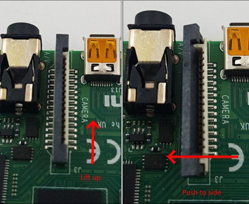
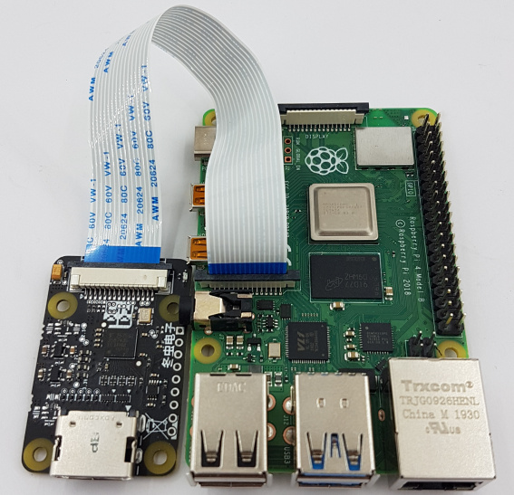
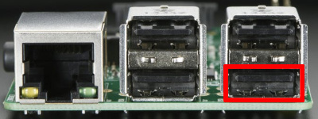

DIY PiKVM V1 Instructions¶
So many choices!
There are many different options with sub-items, so you can choose what will suit you.
However, we marked the recommended way by sign ✮ ✮ ✮
Required parts¶
-
Raspberry Pi board:
- ✮ ✮ ✮ Raspberry Pi 3.
- ... or Raspberry Pi 2.
Does not support H.264 even with HDMI-CSI bridge.
- ✮ ✮ ✮ Raspberry Pi 3.
-
MicroSD card minimum 8Gb class 10.
-
Video capture device:
- ✮ ✮ ✮ HDMI-CSI bridge based on TC358743 chip.
Supports H.264 video encoding on Raspberry Pi 3, automatic resolution selection and the lowest possible latency. - ... or HDMI-USB dongle.
Only heavy MJPEG video, no resolution detection, big latency compared to HDMI-CSI. Some users report hardware problems: the dongle may not work in the BIOS or simply stop working after a while. It's a black box, and no one knows what's inside it. If you have problems with it, it will not be possible to fix them.
- ✮ ✮ ✮ HDMI-CSI bridge based on TC358743 chip.
-
The Pico HID Keyboard & mouse emulator:
- x1 Raspberry Pi Pico board with soldered pins.
- x1 USB-A to Micro-USB cable.
- x10 dupont wires female-female.
- x1 1N5819 diode. It's optional but strongly recommended. Any similar one will do.
-
Optional feature: ATX controller
With this part, you will be able to remotely turn on, turn off and restart your computer!
- x4 MOSFET relays OMRON G3VM-61A1.
Don't use random relay modules or random optocouplers! Some of these may not be sensitive enough for the Raspberry Pi, some others may be low-level controlled. Either use relays that are activated by a high logic level, or follow the design provided and buy an OMRON. See details here. - x4 390 Ohm resistors (see here for alternatives).
- 2x 4.7 kOhm resistors.
- x10+ dupont wires male-male.
- x1 a breadboard.
- various wires for the breadboard.
This can be partially replaced by using Wake-on-LAN in the software, but it will not allow to reboot a hung system, and it is not as reliable as an ATX controller. Sometimes the Wake-on-LAN on the host just stops working, for its own or network reasons.
- x4 MOSFET relays OMRON G3VM-61A1.
-
Optional feature: VGA video capture
If you want to capture VGA from your server instead of HDMI, buy the VGA-to-HDMI converter. Some converters have issues with not supporting all resolutions and refresh rates.
Setting up the hardware¶
-
Video capture device:
✮ ✮ ✮ HDMI-CSI bridge
Insert the flexible flat cable of the HDMI-CSI bridge into the narrow white connector on the Raspberry Pi (the closest one to big USB sockets). It is labeled
CAMERA. To insert you need to open the connector first. On the Raspberry Pi side you can gently lift the black part up and a little bit sideways:Opening the MIPI CSI slot on the Raspberry Pi  For the HDMI-CSI bridge this operation depends on the version you bought. Either pull it gently up as on the Raspberry or push it sideways. Make sure that the cable is inserted on the correct side and until it stops, and then push the black latch back. Never connect or disconnect the flat cable from a powered device. This is not Plug-and-Play, and you can damage it. Also use only the cable that was included with the device package, or make sure that the third-party cable has the correct pinout.
HDMI-CSI bridge connected to Raspberry Pi 4  ... or HDMI-USB dongle
Connect USB dongle to exactly this port. It is bound in the software so the OS does not confuse the video device with something else.
Raspberry Pi 2 and 3 Raspberry Pi 4  
There are many revisions of the Raspberry Pi boards and you may come across one that we haven't tested. If the binding fails, the device will be available for all ports. Everything will work, but if you use a webcam and Linux mistakes it for a dongle, write to us and we will fix it.
WORK IN PROGRESS
First launch and usage¶
-
Connect the USB and HDMI cables to the target host, check the correctness of the ATX connection if you have made this option.
-
Flash the memory card with PiKVM OS and insert it to Raspberry Pi.
-
Turn on PiKVM using a power supply. Wait ~5 minutes. Do not turn off the device until it's fully booted for the first time.
-
Carefully read and follow the "First steps" guide - how to find PiKVM on the network, how to log in there, change passwords, and so on.
Follow the steps described there and come back to this page. -
Note for the HDMI-USB dongle
Many USB video capture devices tell the server's video card that the HDMI cable is supposedly disconnected. This may lead to the fact that if you boot the server without an active stream, the server will not detect your capture card. This is easy to fix:
-
Switch filesystem to RW-mode:
[root@pikvm ~]# rw -
Edit file
/etc/kvmd/override.yamland add these lines:kvmd: streamer: forever: true cmd_append: [--slowdown] -
Finish:
[root@pikvm ~]# ro [root@pikvm ~]# systemctl restart kvmd
-
-
Just reminding again:
✮ ✮ ✮ CHANGE THE PASSWORDS! ✮ ✮ ✮
PiKVM comes with the following default passwords:
- Linux admin (SSH, console, etc.): user
root, passwordroot. - PiKVM Web Interface (API, VNC...): user
admin, passwordadmin, no 2FA code.
These are two separate entities with independent accounts.
To change passwords, you will need to use the console access via SSH or the Web Terminal. If you are using the Web Terminal, enter the
su -command to get therootaccess (enter therootuser password).[root@pikvm ~]# rw [root@pikvm ~]# passwd root [root@pikvm ~]# kvmd-htpasswd set admin [root@pikvm ~]# roIf you require additional user for the Web UI access, use the following:
[root@pikvm ~]# kvmd-htpasswd set <user> # Set a new user with password or change of an existing one [root@pikvm ~]# kvmd-htpasswd del <user> # Remove/delete a userOptionally you can enable the two-factor authentication for more security.
Changing the VNCAuth passkey and IPMI password at the first start of PiKVM is not required, since these services are disabled by default. But it is here just so that you remember their existence.
- Linux admin (SSH, console, etc.): user
-
Try to manage the computer using PiKVM with the Web Interface.
Make sure that you get an image and both keyboard and mouse are working. If something doesn't work, check out our FAQ (it's really useful). If nothing helped, you can get support in our Discord chat. -
Configure access to PiKVM from the Internet using port forwarding or Tailscale VPN, if you need it.
-
Explore the features of PiKVM using the site's table of contents and have fun!